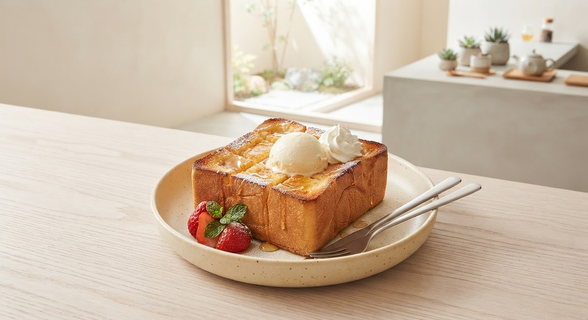
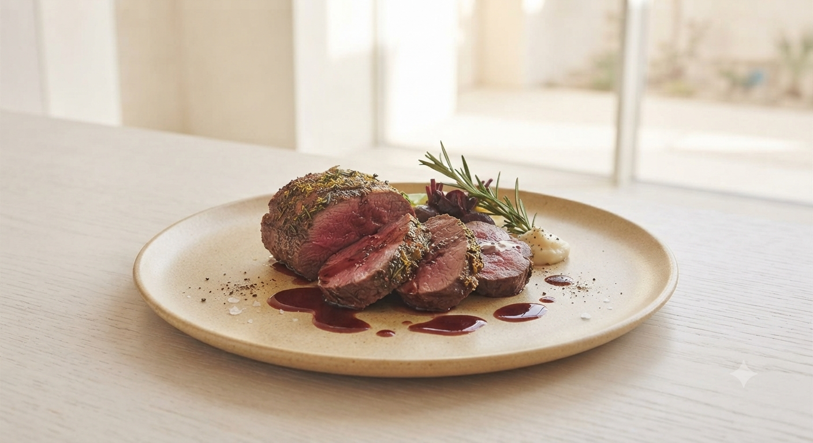
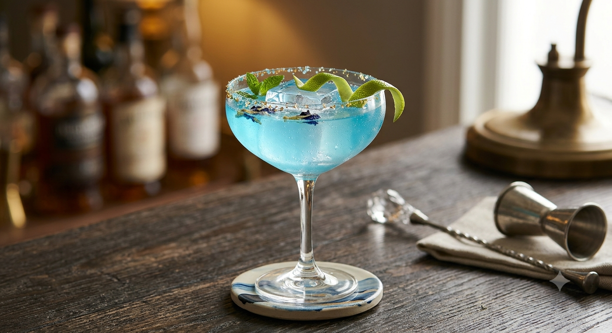

山形駅前徒歩3分・女子会◎、贅沢な隠れ家
五感で楽しむ、Riccoの創作ダイニング
良心的な価格で楽しむ3時間飲み放題と、
「誰かの記念日?」と驚かれる名物ハニートースト。
笑顔あふれるスタッフが、あなたの大切な夜を彩ります。

Best Seller
名物 ハニートースト
厚切りブルーチーズソースのバケットなど、シェフの遊び心が光るオリジナルメニューが豊富。驚きの「美味しい」がここにあります。
「ゆっくり話したい」を叶える贅沢な3時間。女子会や部活の保護者会、二次会など、時間を気にせず盛り上がれます。
アレルギー対応からサプライズ演出まで。スタッフの笑顔と丁寧な対応が、Riccoのリピーターが多い一番の理由です。


「頂いたものはどれも美味しかったのでびっくりです。厚切りバケットのブルーチーズソースは、濃厚な香りが口内を満たす幸福感。生ハムの映えもたまらないです。ゆっくりランチにも訪れたいお店です。」
ー 30代 女性 / 忘年会利用
「女子会としては料理の量的にもちょうどいいです。スイーツもボリュームでテンション上がります!スタッフさんが笑顔で対応してくれるので、お客として話も弾みお酒も進みます♪」
ー 20代 女性 / 女子会利用
お誕生日や記念日でのご利用の際は、
名物ハニートーストをベースにした特別なデザートプレートもご相談可能です。
主役の方の笑顔のために、私たちが全力でサポートします。
週末のご予約はお早めに
「もっと気軽に、もっと色んな味を楽しみたい!」
お客様のあったらいいなのお声から、Riccoの新しいおもてなしを現在準備中です。
お仕事帰りや一人飲みにちょうどいい食べ切りサイズの濃厚チーズフォンデュと、相性抜群のワイン・カクテル1杯を合わせたおひとり様限定セット。
「少しずつ色んな料理をつまみたい」を形に。人気のブルーチーズバケットや生ハム、季節の創作一品をちいさく贅沢に盛り合わせました。